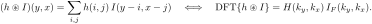
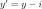
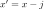
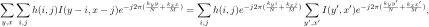
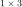
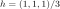
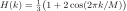
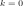
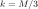

instead of
instead of Statement
For  arrays with circular (periodic) convolution
arrays with circular (periodic) convolution

Derivation
Substitute the convolution into the DFT and change variables

,
:
Example
The

mean filter
has
: 1 at
(mean preserved), zero at
, negative beyond — a poor low-pass with sign inversions, which is why Gaussian kernels are preferred. The PSF of a sensor acts the same way: its transform, the MTF, is the transfer function of the acquisition.Intuition
A filter is a set of volume knobs, one per spatial frequency; convolving in space and turning the knobs in frequency are the same operation.
Pitfall
The DFT implies periodic images: filtering through the FFT wraps the right edge onto the left. Pad the image (with zeros or mirrored borders) before transforming.